WORKSHOP / AGENTIC SDLC
Cara demo
Siapkan satu repo latihan, satu browser, dan bukti yang bisa diperiksa.
Personal atau organisasi?

Baca alur sebagai teks
- Personal atau organisasi? → personal public → S01–S15 dengan fallback lokal
- Personal atau organisasi? → organisasi berizin → Tambahkan Jira / Teams dan kebijakan
- Organisasi private → cek lisensi sebelum → Code scanning dan Copilot
Gunakan full untuk presenter dan bare untuk peserta. Aktifkan Jira/Teams atau dashboard organisasi hanya di tenant yang mengizinkan.
Persiapan lokal
- Clone repo dan pasang dependensi. Node 20 dipakai khusus untuk lab (bukan produksi).
git clone https://github.com/sandy-gunawan/agenticSDLC.git cd agenticSDLC npm ci npx playwright install chromium - Ambil tag dan jalankan baseline. Buka localhost:3000.
git fetch origin --tags npm run demo:before - Verifikasi contoh sebelum presentasi.
npm run shots -- S04
Periksa GitHub sebelum sesi
- Pastikan Actions dapat menjalankan jobs, Copilot tersedia, dan issue S04 terlihat.
- Periksa draft PR stok, penegakan review, dan CodeQL di tab Security.
- Untuk gh-aw, pemilik simpan secret
COPILOT_GITHUB_TOKENsesuai dokumentasi resmi; setWORKSHOP_AI_ENABLED=truehanya saat latihan. Jangan tempel token ke terminal yang dicatat. - Ambil screenshot GitHub/VS Code hanya dari sesi berizin. Gunakan bukti lokal bila runner belum tersedia.
Reset tanpa mengubah GitHub
npm run resetHentikan server demo dari terminalnya dulu. Jika ada perubahan di worktree, pindahkan atau simpan perubahan sebelum membersihkannya. Tidak ada force-push.